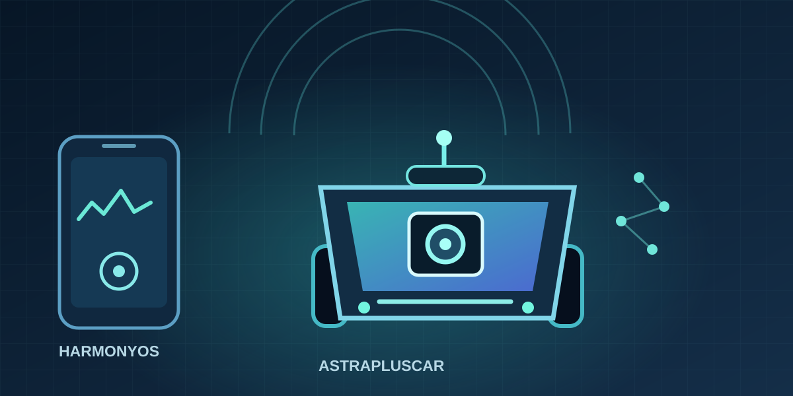
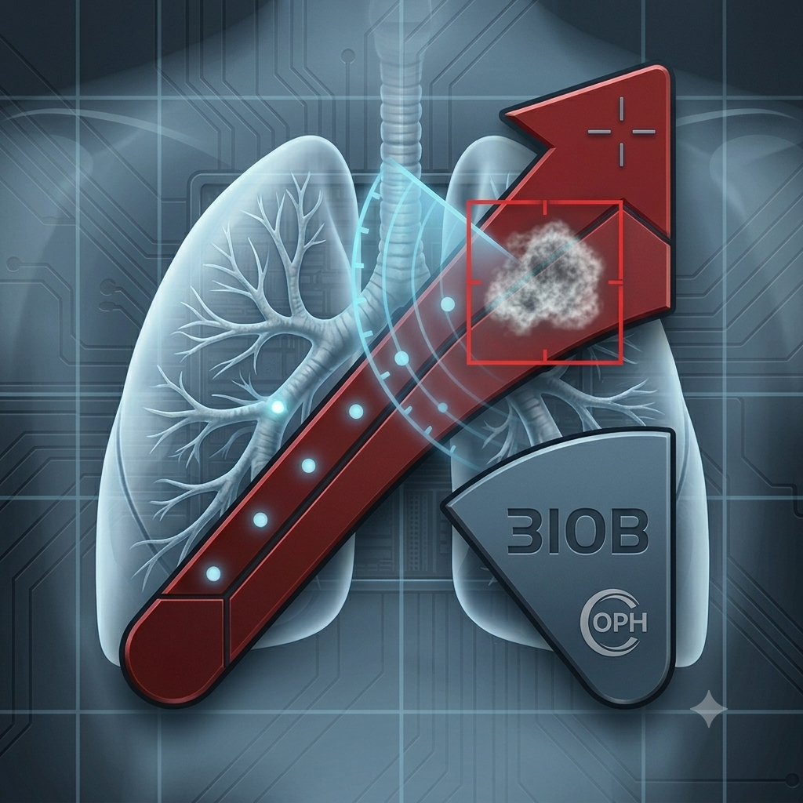
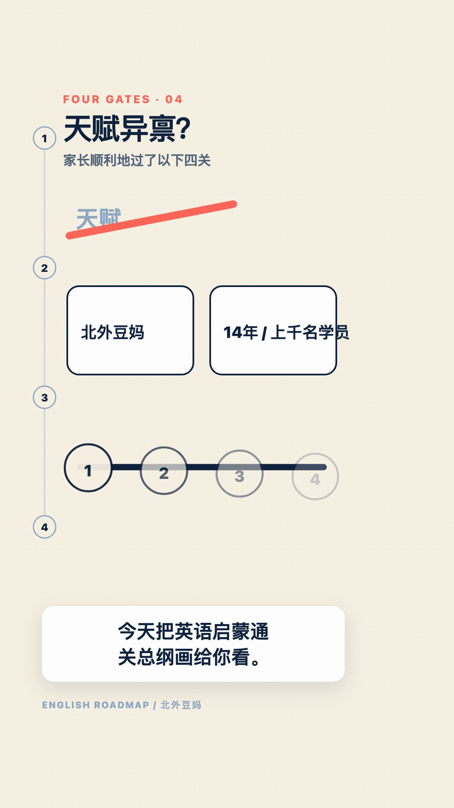
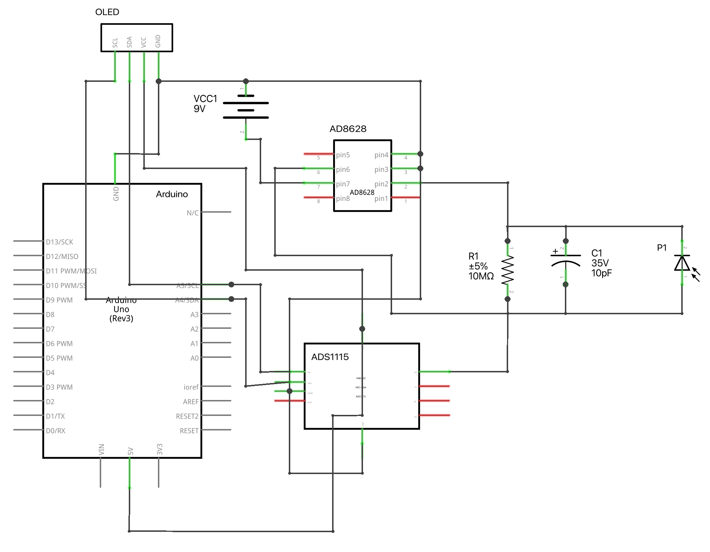
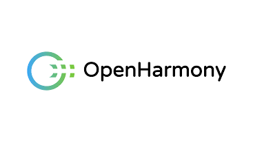
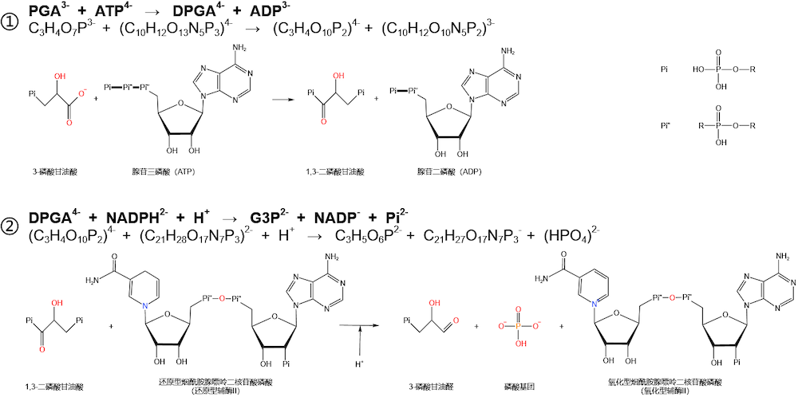
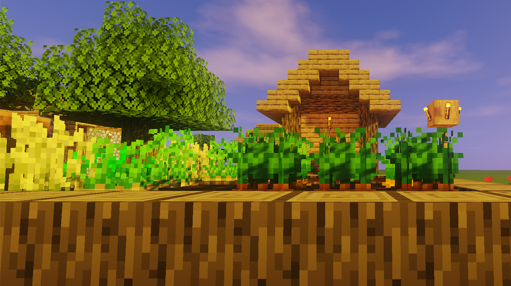
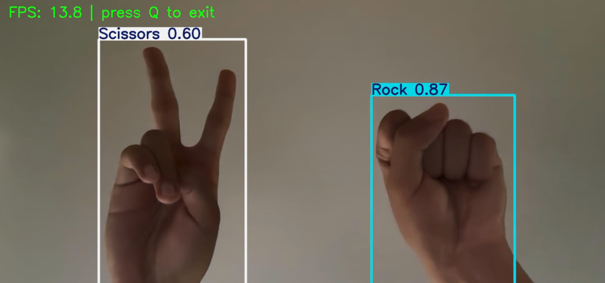
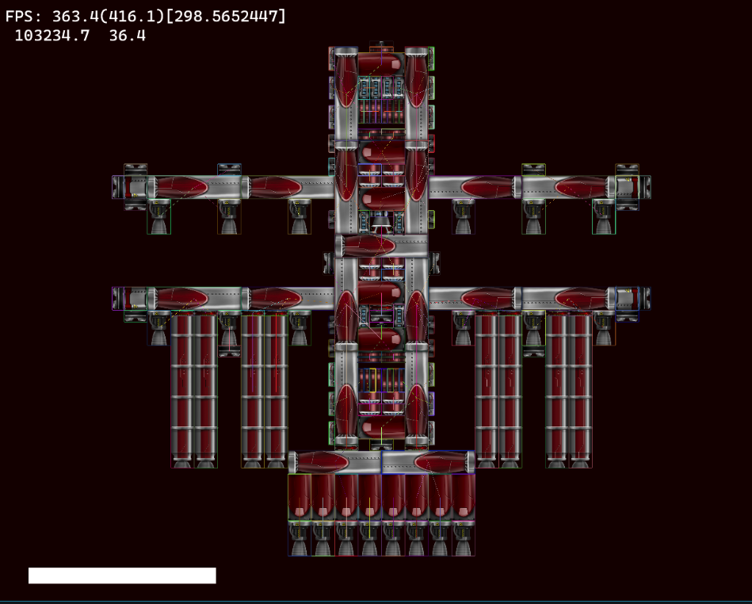

支线
SIDE跨平台客户端、Web / API 与 AI 视频工作流；继续学习 Rust、C++ 与系统开发。
Everything is possible by code.
个人总览
计算机在读 · 专注人工智能前沿 · 跨界极客 · 影像爱好者
跨平台客户端、Web / API 与 AI 视频工作流；继续学习 Rust、C++ 与系统开发。
主要是风景摄影与无人机航拍，人像进修中......
J'apprends le français；热爱听音乐；跑步骑行中；在提瓦特、罗德岛与塔卫二切换；音游在线，每天赚费沉底石头人（）。
ABOUT ME
跨越学科的边界，只为连接更广阔的世界。
应用看板持续迭代，推进 HarmonyOS、Apple 与 Android 原生客户端
绮秀、Loci 与复扫雷探索不同使用场景
昇腾 310B · CANN / AscendCL · MindSpore Lite
OpenHarmony 系统适配、视觉推理与机器人软硬件协同
用 OpenCode 组织本地视频制作的创意、分镜、渲染与检查
持续探索模型与 Agent 在实际创作中的应用
继续学习 AI、Rust、C++ 与系统开发
关注 AI for Science 与生物信息学，作为后续探索方向
欢迎来到我的个人主页，我是Ray～你可以在这里全面的了解我。我不是特别信MBTI这个东西，但是这个东西确实挺火的。听说能让人最快了解人的性格，我目前测的是INTP，仅供参考。
我出生于 2007 年，目前就读于北方工业大学计算机科学与技术专业。虽然身在通信专业，但我目前投入精力最多、也最热爱的领域是软件开发。
我从小就和编程结缘：从刚记事的时候就在玩Scratch之类的模块化编程，之后又接触了EV3机器人和Arduino UNO开发板，我一直沉浸其中。印象里用EV3做过很多好玩的机器人，比如颜色分类的、爬楼梯的小车、履带小车，最后还做了一个能还原三阶魔方的魔方机器人——记得当时颜色扫描不是很稳定。虽然现在那台机器已经开不了机，也落了一层灰，但这个魔方机器人我一直留到现在，没舍得拆。
三四年级的时候，Arduino的C语言是我接触的第一个正经编程语言，也是人生第一次体验“嵌入式开发”。虽然起初只是做流水呼吸灯、抢答器这类小物件，但后来我成功做出了一辆带云台的超声波避障小车。这辆小车不仅登上了当年的校报，后来还捐赠给了学校进行展示。
再后来，2018年我参加了丝绸之路国际青少年大赛机器人竞赛，做了一个智能鱼食投喂机。之后开始学C++并投身信息学奥赛。升入初中后，我又参与制做了一个烤地瓜模组的项目，还有人找我们签合同购买源码将模组上架网易版本。虽然那份合同现已过期，项目也因学业而搁置，但现在想起来还是充满回忆。
高中几乎三年没碰代码，都在做生物学相关的研究。去年九月份，我踏入了鸿蒙的大门，成为了鸿蒙开发者，开始参与鸿蒙应用看板项目。转眼间半年过去了，这个项目也算是积累了一定的知名度。现在我也正持续推进这个项目的进度：鸿蒙应用看板App已经进入邀请测试阶段，预计很快就能上架；未来还计划将其扩展至 macOS 与 Android 平台。
除了应用层，我目前也在钻研OpenHarmony Hi3861嵌入式开发。之前简单的做了一些开发板的单独开发，现在在做结合HarmonyOS应用的智慧大棚项目。我通过硬件实验，从底层逻辑理解设备侧能力与系统工程。最近开始学习机器学习，已经做了基本的回归预测和目标检测，未来打算继续深入。在网页开发上，我搭建了个人网站、模组站、第五人格站以及农杆菌转化法实验站点。现在的我，程序方面涉猎C、C++、Java、Rust、HTML、ArkTS、Swift和openGauss数据库。对我来说参与各种项目是一种我特别感兴趣的娱乐，未来我还会做更多的开发，全面提升自己的语言能力。
生物学是我探索世界的另一扇窗。高中时期遇见的两位非常优秀的生物老师，是我与这门学科结缘的关键。她们不仅教会了我知识，更以卓越的专业素养，将我从一个单纯的爱好者，培养成了能够独立思考的研究者。在老师的指导下，我带领高中开创了首届PCR实验，把高等的实验内容带到了高中课堂。我自己写了几篇感兴趣话题的小论文，还和同学一起撰写过一篇关于蛋白质在极特殊生物中作为遗传因子的设想。虽然现在因为主攻编程，碳同化综述和一些橙色平板研究项目的实验记录暂时搁置了，但我发现用代码去阐述生物学也十分有趣。生物学或许是我的一种“遗憾美”，如果有机会，未来我也希望能向生物信息学方向探路。
在代码之外，我热爱跑步与骑行，相机和无人机则是出门必备。对我而言，摄影的乐趣远不止于最后那张照片，更在于切换视角时的构图巧思、尝试不同的叙事风格，以及在既有基础上推陈出新的创作过程。
在兴趣爱好方面，我以前有小号六级证书，但很明显现在不会吹了（）。初中时自学的钢琴，现在也能弹几首曲子。此外，我还喜欢模拟飞行和玩魔方：最喜欢的是四阶，其次是五魔方。音乐也是我人生中不可割舍的一部分。无论是在通勤路上，还是在编写代码、调试网页与硬件的专注时刻，音乐不仅是滤除杂音的背景，更是与我灵感同频的共振。我还是F1的铁杆观众，梅赛德斯奔驰AMG是我的主队，最喜欢的车手是刘易斯·汉密尔顿。虽然我依旧钟情于保时捷911与AMG这种纯粹的性能机器，但也时刻关注着国产新能源的前沿发展。
我是一个重度的机圈与数码发烧友，周围很多同学朋友在换新设备的时候时常会找我导购。我日常反复横跳在苹果的硬核科技与华为的创新美学之间，只要有发布会，直播间里肯定少不了我，安卓阵营中最喜欢的则是vivo。电脑方面，我是ARM架构与Apple Silicon的忠实拥护者。虽然目前仍有诸多不便，但MacBook的超高续航比与轻便体验，精准切中了我对代码编写与影像创作的核心生产力要求。至于摄影，我喜欢哈苏、索尼与大疆，它们是我记录世界时不可或缺的延伸。
游戏方面，我是Minecraft的老玩家，也算一名“原学家”（大概）。近期正在玩明日方舟和异环；同时也活跃于Arcaea、Phigros等音游，有时候还打打milthm、舞萌、lanota、rizline。在第五人格中，我曾在36赛季打到巅峰七阶31星，拿到了三个疯眼A牌（最高A47）和若干B牌（虽然目前已退游）。皇室战争里我爱玩石头人体系，主力卡组是自己配的克隆石卡组。
身为理科生，我却对世界文化怀有极强的好奇心，也很乐意了解各个国家的风土人情。中小学时期的英语演讲比赛与两年英国议会制辩论（BP）的经历，为我打下了坚实的语言基础。最近我也在学习法语。从Cécile Corbel的空灵吟唱，到枫丹水国的浪漫景致；从《清涟》的悠扬旋律，到《罗密欧与朱丽叶》的经典对白——法语的魅力正不断驱使着我，向这门语言的更深处漫溯。
无论是在 0 与 1 的代码世界里构建秩序，还是在双螺旋的生物蓝图中寻找规律，我始终相信，跨界的探索能让生命拥有更宽广的边界。如果你也对技术、生物或这个多元的世界充满好奇，欢迎随时与我交流。
很高兴认识你，在这段名为“成长”的航程中。
——Ray
2026.10.3
PROJECTS
把热爱写成项目，把项目做成长期作品。
我主导或主要参与的项目，覆盖鸿蒙与昇腾、AI 工作流、科研实验与开源协作。
当前展示 6 项代表作品，可切换全部 14 项主要项目与 11 项课程创作
与 Shenjack 合作的鸿蒙应用市场看板，可查询应用、查看版本和下载趋势。鸿蒙版已更新至 3.2.0，新增口碑榜；另有 Apple 原生客户端和开发中的 Android 版。
开放原子大赛获奖作品Rust · ArkTS · 数据可视化 · OpenAPI

连接昇腾设备端、ESP32 底盘与 HarmonyOS 手机控制端。设备端基于昇腾官方 E2E 样例，含路标辅助、巡线、目标追踪三套自动驾驶场景；手机端提供视频预览、三向雷达与驾驶操控，并有失联停车保护。
昇腾 · HarmonyOS · ESP32 · 机器人

将 OpenHarmony 5.0.3 移植到昇腾 310B 开发套件，并在其上实现 X 光胸片肺炎病灶检测应用。
前半是内核、驱动与构建链适配（合入 43 个补丁），后半是 ArkTS 界面与 YOLOv5s 推理，CPU 与 NPU 两条路径均已验证。
昇腾310B · OpenHarmony · NPU推理 · YOLOv5
给 Coser 用的 HarmonyOS 应用：安排 Cos 计划，列准备和打包清单，整理活动、照片与花费。数据保存在本机，目前为 1.0.0-beta.1。
HarmonyOS · ArkTS · 离线优先 · 加密 RDB
基于青月晓原作的三端原生移植：圆复数与闵可夫斯基两种模式、三档难度和独立战绩。HarmonyOS、Android、iOS / iPadOS / macOS 源码已合并公开；1.2.0 支持彩色／黑白外观与长按清旗翻开。
ArkTS · Kotlin · SwiftUI · 复数扫雷

在 OpenCode 中制作视频的本地工作区，包含配音、分镜、浏览器动画渲染和 FFmpeg 合成工具。修改时可重做部分场景，目前由 Agent 与 Skills 组织制作流程。
OpenCode · TypeScript · FFmpeg · JSON Schema

物理竞赛项目。用线圈偏转和光杠杆把微弱电信号转为光点位移，再由 PSD 传感器和 ADS1115 采样，配合 Arduino 程序与 Python 工具做标定和分析。
Arduino · 光杠杆放大 · PSD传感器 · 嵌入式

两块 Hi3861 开发板采集大棚环境数据并控制灯、风扇和水泵，通过 EMQX 传递 MQTT 消息。HarmonyOS 应用用于查看读数、手动调节或按阈值自动控制。
OpenHarmony · HarmonyOS · MQTT · 物联网
记录每天的时间与事项，按天或按周回看，用图表查看时间分配。支持多行文本输入、跨夜记录，也保留地点与到访记忆。HarmonyOS 原生应用，开发中。
HarmonyOS · ArkUI V2 · 时间记录 · 本地存储

收录生物学方向的三类成果：一个留下完整记录的 PCR 课堂实验（设计、凝胶电泳结果与报告）、三篇研究文稿（朊病毒蛋白质猜想、卡尔文循环、酵母菌平板变橙分析），以及一个把农杆菌转化法做成可拖拽操作的交互网页。
PCR · 分子生物学 · 研究论文 · 凝胶电泳

与 Featurehouse 团队合作开发的 Minecraft 模组。加入地瓜种植、加工和附魔玩法，包含四个方块、五种物品及用灵魂火激活的魔法锅。版本 1.5.1。
Fabric · Java · 模组开发 · 资源包

暑期 Python 课程项目，主要用 YOLO11n 识别石头、剪刀、布三种手势。验证集 mAP50 为 0.940，测试集为 0.934；也收录了前期 Python 与机器学习练习。
YOLO11n · 机器学习 · Python · 随机森林

实训课程中的安防监控项目。YOLOv5 识别图片和视频，Spring Boot 保存告警并通过 WebSocket 推送，Web 与 HarmonyOS 客户端用于查看和处理。
YOLOv5 · Spring Boot · WebSocket · HarmonyOS

与 @shenjack 协作的火箭模拟项目，以更轻量的方式探索类似 Simple Rockets 的玩法；这是一个侧重游戏制作与协作实践的项目。
Rust · 火箭模拟器 · 物理模拟 · 协作开发
课程项目、小工具与影音创作，多数是为自己或身边人做的。
从 MindSpore / MobileNetV2 迁移学习实验延伸到 HarmonyOS 原生应用。通过相册或拍照输入图片，使用 MindSpore Lite 在 CPU 本地完成猫狗分类，支持深浅色界面。
MindSpore · MobileNetV2 · 端侧推理 · 迁移学习
C++11 编写的命令行汽车租赁管理工具，用单向链表管理车辆、用户与租车记录，数据以二进制文件持久化。支持增删改查、租车退车、分类查询、分组统计、票据打印与操作日志。
C++11 · 数据结构 · 文件持久化 · 单向链表
C# 通信原理课程项目。在控制台逐步演示文本编码、信号调制、信道传递和解调还原，也可以连续运行各环节，查看输入与输出。
C# · .NET · 数字通信 · xUnit
用 Python 和 Playwright 辅助查询录取结果，将院校、专业、批次及查询状态写回 Excel。历史项目已归档，查询入口未重新验证。
Python · Playwright · pandas · openpyxl
以交通灯状态机、灯光与蜂鸣器联动、环境数据采集、自定义 AT 指令四条路径组织的 OpenHarmony 嵌入式练习，覆盖 GPIO、PWM、ADC、I²C 与 UART。
OpenHarmony · GPIO · PWM · I²C
按通信工程、HarmonyOS 应用与 Hi3861 嵌入式三个方向归档的课程论文与实验报告，共 8 篇，涵盖技术综述、应用设计与智慧场景原型。
通信工程 · HarmonyOS · 嵌入式 · 课程论文
《第五人格》排位目标计算器：输入当前积分、目标段位与赛季日期，计算剩余天数与每日所需积分，并提供手动加减分与历史记录。
JavaScript · 实用工具 · localStorage
参与《红楼梦》剧组 2023 年末的翻拍活动，承担导演、摄影和剪辑工作，完整经历从现场拍摄到成片整理的创作流程。
导演 · 摄影 · 剪辑 · 短片
使用 InDesign 反复打磨版式与内容，并为实体纪念册加入可访问网站的 NFC 标签；集体照与「送你一朵小红花」构成视觉记忆点。
InDesign · 版式设计 · NFC · 实体印刷
为 2024 年 11 月的生日活动制作影像内容，参与分镜、拍摄与后期剪辑，把一次线下聚会整理成可留存的视频作品。
分镜 · 拍摄 · 剪辑 · 纪念影像
双人依次匿名答题，在浏览器本地比较价值观、生活方式和附加议题；结果提供总分、分项分数与题目明细，答案不会上传。
JavaScript · 互动网页 · 本地计分
PHOTOGRAPHY & LIFE
以俯瞰视角重构地表纹理，用快门捕捉通信频谱之外的瞬间。
CONTACT
项目合作 · 技术交流 · 摄影约稿 · 或者聊聊想法。